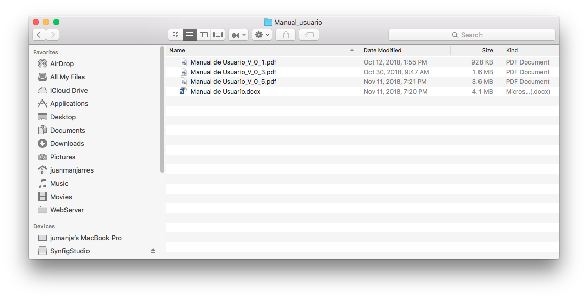
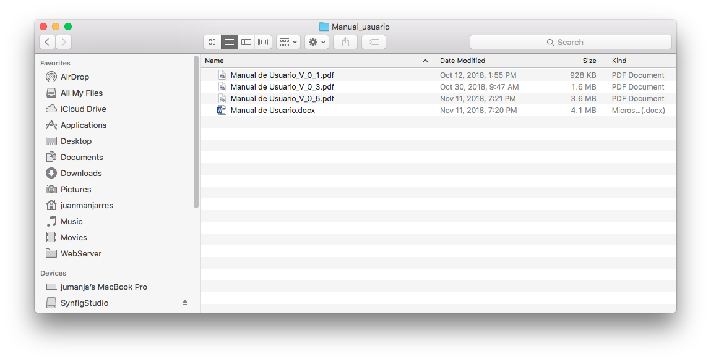

A continuación tres ejemplos, se muestra el contenido del archivo resultado, el primero exitoso con contenido, otro caso fallido, y el último exitoso pero con número de registros procesados. Se muestran para cada uno, el historial de cambios subidos al repositorio como evidencia de ejecución de pruebas unitarias para casos de uso en API de login y API de usuario:
Caso de Prueba Exitoso, el archivo resultado contiene los parámetros de token de sesión generado por el sistema.


Caso de Prueba Exitoso, el archivo resultado contiene un error de SQL, pues se intenta agregar un usuario con código admin, y ese código ya existe.

Caso de Prueba Exitoso, el archivo resultado contiene respuesta en formato json con el número de registros procesados (en este caso, 1 registro actualizado a estado "R").

Caso de Prueba Exitoso, el sistema soporta al menos cinco (5) usuarios concurrentes.

Nuestro ciclo de vida es Desarrollo Incremental, por lo que con cada incremento liberado, se entregó tanto el Control de Pruebas incluyendo los casos de uso disponibles para pruebas, al igual que el Manual de Usuario actualizado.
Sin embargo, la persona Supervisora del proyecto al iniciar prestaba el servicio como Secretaria, y cuando ya empezamos a entregar los incrementos, pasó a prestar el servicio como Presidenta, y se nombró nueva Secretaria. Al parecer la nueva Secretaria no tuvo o el tiempo o la disposición de realizar las pruebas documentadas, lo cierto es que tuvieron que buscar otra persona para que prestara ese servicio.
Sean cuales sean las razones por la que no las documentaron, nosotros si realizamos nuestras pruebas antes de liberar los incrementos, pero esta situación ocasionó que no pudieramos contar ni entregar aquí evidencias UAT por parte del área usuaria.
Nota 1: La Entrega y Aceptación por parte del área usuaria, obtuvo luego de hacer una presentación y demostración del software funcionando, a la vez que se entrenó al personal que interactuaría con el software (Miembros de la Junta Local), pero la nueva Secretaria no estuvo presente como se evidencia en la reunión de seguimiento número 2.
Nota 2: A la fecha (Diciembre 3/2018), ya hay nuevo reemplazo en las labores de Secretaría, y nos ofrecimos a capacitar a el nuevo integrante en el software (adicional a los ya entregados Manuales de Usuario y Administrador).
Relacionamos entonces a continuación, muestras de los archivos de entregados para Control para las Pruebas, la lista de las versiones de Manual de Usuario de los correspondientes incrementos:
 

El archivo final con la entrega, para las UAT finales quedó así:

Y esta es una muestra de las pruebas funcionales (control de calidad) antes de liberar incrementos, realizadas por el grupo de desarrollo, siguiendo la versión correspondiente del manual de usuario, tal como lo haría el usuario final: